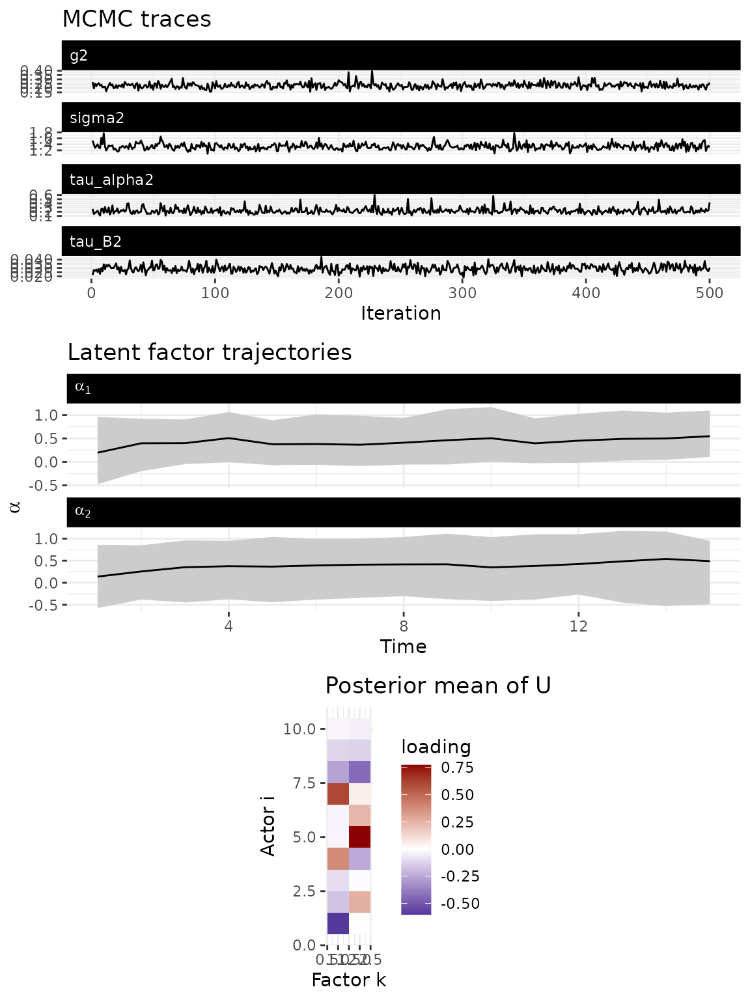
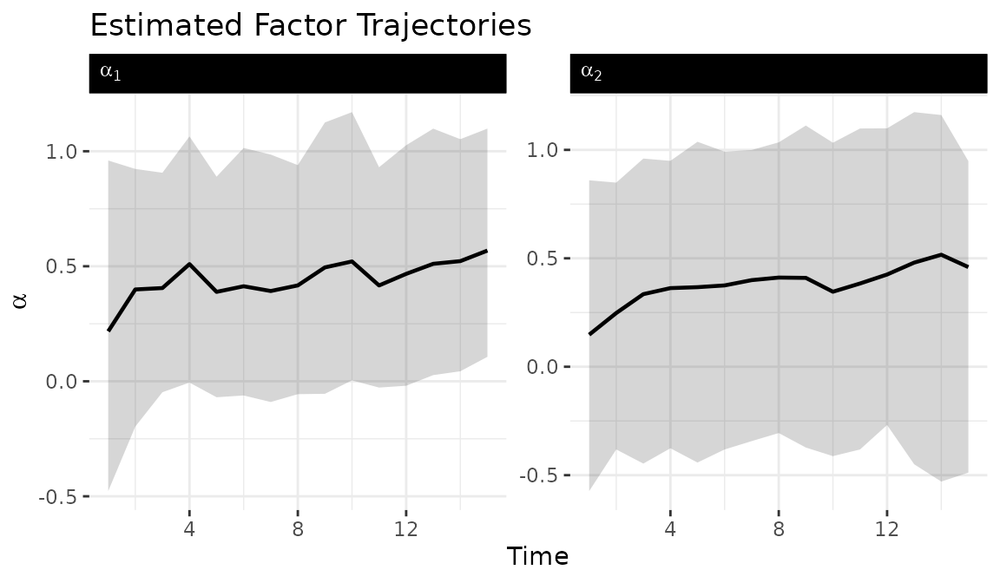

Low-rank bilinear network models
Tosin Salau & Shahryar Minhas
2026-03-28
Source:vignettes/lowrank_dbn.Rmd
lowrank_dbn.Rmd1 Overview
The low-rank model factorizes the sender dynamics matrix as:
where is an orthogonal matrix (constrained to the Stiefel manifold) and is a vector of time-varying factor strengths. This reduces the number of free parameters from to . For a 50-actor network, the full dynamic model requires estimating 2,500 entries per time point, while a rank-3 low-rank model requires only 153 ().
The columns of define latent groups of actors that share similar influence patterns. The factor trajectories capture how strongly each latent dimension drives the dynamics at each time point. This structure makes the model tractable for larger networks where the full dynamic model becomes prohibitively expensive.
2 When to use low-rank
The low-rank model is designed for networks with 50 or more actors where the full dynamic model is computationally prohibitive. The parameter savings grow quadratically with network size:
| Network Size | Full Dynamic Parameters | Rank-3 Low-Rank Parameters |
|---|---|---|
| 20 actors | 400 | 63 |
| 50 actors | 2,500 | 153 |
| 100 actors | 10,000 | 303 |
For smaller networks where full flexibility is affordable, use
model = "dynamic". For known structural break points, use
model = "piecewise".
3 Memory estimation
Before fitting, check RAM requirements with
estimate_memory(). This is particularly important for the
low-rank model because its primary use case is larger networks where
memory is the binding constraint.
estimate_memory(
n_row = 50, n_col = 50, p = 1, Tt = 30,
nscan = 5000, burn = 2000, odens = 5,
family = "ordinal"
)
#> Dynamic DBN memory estimate:
#> Network: 50 x 50, 1 relation(s), 30 time points
#> MCMC: 1000 draws (nscan=5000, odens=5)
#> Time thin: 1 (keeping 30 of 30 time points)
#> --------------------------------
#> Theta: 0.56 GB
#> Z: 0.56 GB
#> A: 0.56 GB
#> B: 0.56 GB
#> M: 0.02 GB
#> --------------------------------
#> TOTAL: 2.25 GB4 Simulate data
We simulate a 10-node network with rank
,
meaning the sender dynamics are driven by two latent factors. We use the
Gaussian family (sim$Z) for this demonstration because it
provides sharper factor identification than the ordinal family at small
network sizes. The model’s primary use case is networks with 50+ actors
where the ordinal family works well; this small example illustrates the
API and factor trajectory interpretation.
sim = simulate_lowrank_dbn(
n = 10,
p = 1,
time = 15,
r = 2,
sigma2 = 0.3,
tau_alpha2 = 0.1,
tauB2 = 0.04,
seed = 6886
)
dim(sim$Z)
#> [1] 10 10 1 155 Fit the model
The key argument is r, the rank of the factorization.
Setting r much smaller than n is what makes
this model scalable. In practice,
or
captures the dominant dimensions of variation in the influence structure
for most applications.
fit = dbn(
sim$Z,
model = "lowrank",
family = "gaussian",
r = 2,
nscan = 1000,
burn = 500,
odens = 2,
verbose = FALSE
)6 Model diagnostics
The default plot() method provides a combined diagnostic
view: MCMC trace plots for scalar parameters, estimated factor
trajectories
(
over time), and the posterior mean of the node loading matrix
.
plot(fit)
7 Factor trajectories
The tidy_dbn_lowrank() function extracts factor
trajectories in tidy format for custom visualization. Ribbons show 95%
posterior credible intervals.
alpha_df = tidy_dbn_lowrank(fit)
ggplot(alpha_df, aes(x = time, y = mean)) +
geom_ribbon(aes(ymin = lo, ymax = hi), alpha = 0.2) +
geom_line(linewidth = 0.8) +
facet_wrap(
~ factor, scales = "free_y",
labeller = label_bquote(alpha[.(factor)])
) +
labs(
title = "Estimated Factor Trajectories",
x = "Time", y = expression(alpha)
) +
theme_bw() +
theme(
panel.border = element_blank(),
strip.background = element_rect(fill = "black", color = "black"),
strip.text.x = element_text(color = "white", hjust = 0)
)
8 Model summary
summary(fit)
#> Low-rank Dynamic Bilinear Network model
#> nodes : 10
#> relations : 1
#> time pts : 15
#> rank : 2
#>
#> mean 2.5% 97.5%
#> sigma2 1.328 1.163 1.531
#> tau_alpha2 0.224 0.134 0.396
#> tau_B2 0.029 0.022 0.038
#> g2 0.229 0.177 0.2999 Forecasting
Forecasts propagate both the factor dynamics and the receiver dynamics forward, generating forecast distributions that reflect uncertainty in all model parameters.
10 Choosing the rank
Start with
and increase if posterior predictive checks show poor fit. Compare
models with different ranks using compare_dbn(). Factors
whose
trajectories remain near zero throughout the time series contribute
little and suggest a lower rank suffices.
11 Next steps
For the full dynamic model without low-rank constraints, see
vignette("dynamic_dbn"). For impulse response analysis, see
vignette("impulse_response"). For the mathematical
framework underlying all model variants, see
vignette("methodology").